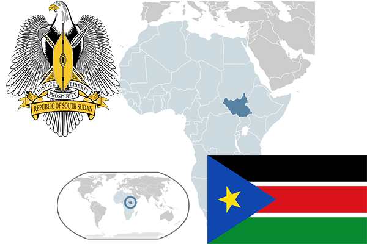

To`liq nomi: Janubiy Sudan Respublikasi
Region: Sharqiy Afrika
Qonunchilik shakli: Respublika
Mustaqillik kuni: 9-iyul, 2011-yil
Poytaxt: Juba
Maydoni: 619,745 km²
Chegaradosh davlatlari: Sudan, Efiopiya, Keniya, Uganda, MAR, Kongo.
Aholisi: 12,260,490 (2017-yil)
Aholi zichligi: 13.33/km2
Aholining o`rtacha yoshi: 56,14 yil
Rasmiy tili: Ingliz tili
Dini: -
Pul birligi: Janubiy Sudan funti
Telefon prefiksi: +249
Internet domen: .ss
Xalqaro tashkilotlarga a`zoligi: BMT (2011)
Dengiz va okeanlarga chiqishi: Yo’q
YIM: Butun: $3.6 mlrd.(2017-yil) Jon boshiga: $275
Yirik shaharlari: Juba